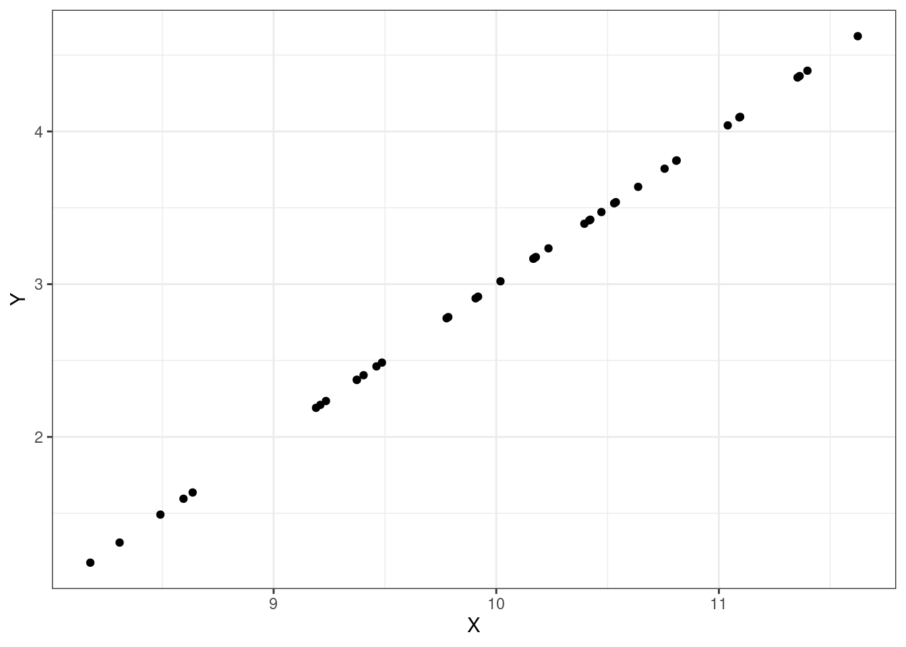
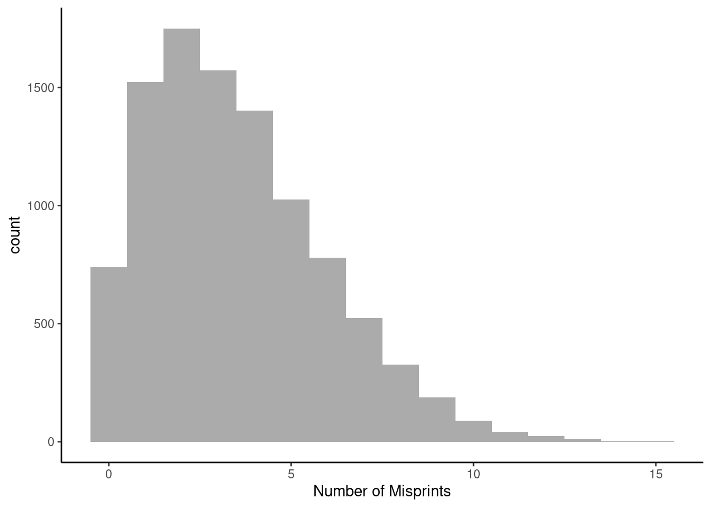
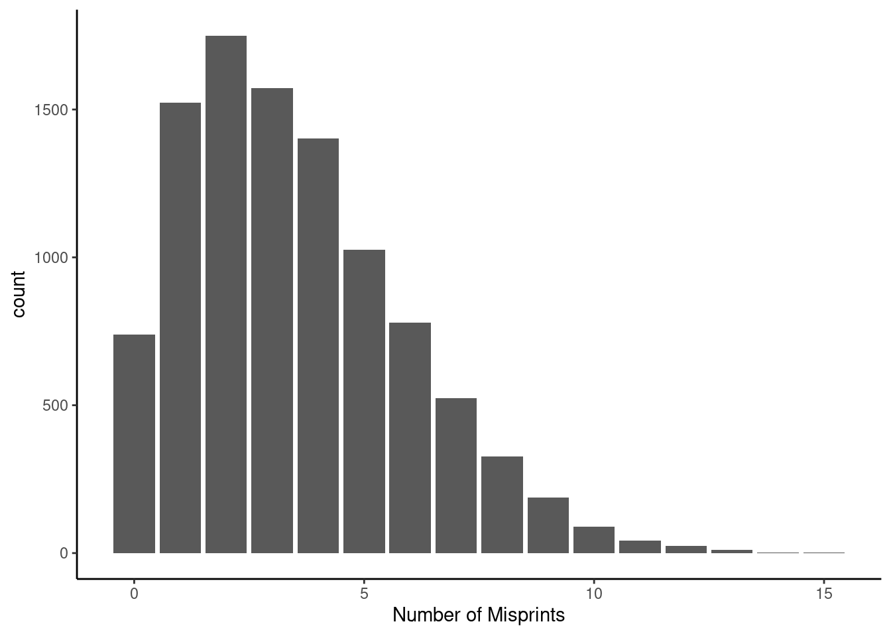

fractions(integrate(function(x){x^2/2},0,2)$value)[1] 4/3Given a joint pmf/pdf, calculate and interpret the expected values/means and variances of random variables and functions of random variables.
Differentiate between covariance and correlation, and given a joint pmf/pdf, calculate and interpret the covariance and correlation between two random variables.
Given a joint pmf/pdf, determine whether random variables are independent of one another and justify your conclusion with appropriate calculations and reasoning.
Calculate and interpret conditional expectations for given joint pmfs/pdfs.
Computing expected values of random variables in the joint context is similar to the univariate case. Let \(X\) and \(Y\) be discrete random variables with joint pmf \(f_{X,Y}(x,y)\). Let \(g(X,Y)\) be some function of \(X\) and \(Y\). Then: \[ \mbox{E}[g(X,Y)]=\sum_x\sum_y g(x,y)f_{X,Y}(x,y) \]
(Note that \(\sum\limits_{x}\) is shorthand for the sum across all possible values of \(x\).)
In the case of continuous random variables with a joint pdf \(f_{X,Y}(x,y)\), expectation becomes: \[ \mbox{E}[g(X,Y)]=\int_x\int_y g(x,y)f_{X,Y}(x,y)\mbox{d} y \mbox{d} x \]
Given a joint pmf, one can find the mean of \(X\) by using the joint function or by finding the marginal pmf first and then using that to find \(\mbox{E}(X)\). In the end, both ways are the same. For the discrete case: \[ \mbox{E}(X)=\sum_x\sum_y xf_{X,Y}(x,y) = \sum_x x \sum_y f_{X,Y}(x,y) \]
The \(x\) can be moved outside the inner sum since the inner sum is with respect to variable \(y\) and \(x\) is a constant with respect to \(y\). Note that the inner sum is the marginal pmf of \(X\). So, \[ \mbox{E}(X)=\sum_x x \sum_y f_{X,Y}(x,y)=\sum_x x f_X(x) \]
Example:
Let \(X\) and \(Y\) be discrete random variables with joint pmf below.
\[ \begin{array}{cc|ccc} & & & \textbf{Y} & \\ & & 0 & 1 & 2 \\&\hline0 & 0.10 & 0.08 & 0.11 \\\textbf{X} &1 & 0.18 & 0.20 & 0.12 \\&2 & 0.07 & 0.05 & 0.09 \end{array} \]
Find \(\mbox{E}(X)\)
First we will use the joint pmf directly, then we find the marginal pmf of \(X\) and use that as we would in a univariate case.
\[ \mbox{E}(X)=\sum_{x=0}^2 \sum_{y=0}^2 x f_{X,Y}(x,y) \] \[ =0*0.10+0*0.08+0*0.11+1*0.18+...+2*0.09 = 0.92 \]
The marginal pmf of \(X\) is \[ f_X(x)=\left\{\begin{array}{ll} 0.10+0.08+0.11, & x=0 \\ 0.18+0.20+0.12, & x=1 \\ 0.07+0.05+0.09, & x=2 \\ 0, & \mbox{otherwise} \end{array}\right. = \left\{\begin{array}{ll} 0.29, & x=0 \\ 0.50, & x=1 \\ 0.21, & x=2 \\ 0, & \mbox{otherwise} \end{array}\right. \]
So, \(\mbox{E}(X)=0*0.29+1*0.5+2*0.21=0.92\).
Exercise: Let \(X\) and \(Y\) be defined above. Find \(\mbox{E}(Y)\), \(\mbox{E}(X+Y)\), \(\mbox{E}(XY)\), and \(\mbox{E}\left(\frac{1}{2X+Y+1}\right)\).
As with \(\mbox{E}(X)\), \(\mbox{E}(Y)\) can be found in two ways. We will use the marginal pmf of \(Y\), which we will not derive:
\[ \mbox{E}(Y)=\sum_{y=0}^2 y \cdot f_Y(y)=0*0.35+1*0.33+2*0.32 = 0.97 \]
To find \(\mbox{E}(X+Y)\) we will use the joint pmf. In the discrete case, it helps to first identify all of the possible values of \(X+Y\) and then figure out what probabilities are associated with each value. This problem is really a transformation problem where we are finding the distribution of \(X+Y\). In this example, \(X+Y\) can take on values 0, 1, 2, 3, and 4. The value 0 only happens when \(X=Y=0\) and the probability of this outcome is 0.10. The value 1 occurs when \(X=0\) and \(Y=1\) or when \(X=1\) and \(Y=0\). This occurs with probability 0.08 + 0.18. We continue in this manner: \[ \mbox{E}(X+Y)=\sum_{x=0}^2\sum_{y=0}^2 (x+y)f_{X,Y}(x,y) \] \[ = 0*0.1+1*(0.18+0.08)+2*(0.11+0.07+0.20)+3*(0.12+0.05)+4*0.09 \] \[ = 1.89 \]
Note that \(\mbox{E}(X+Y)=\mbox{E}(X)+\mbox{E}(Y)\). (The proof of this is left to the reader.)
\[ \mbox{E}(XY)=\sum_{x=0}^2\sum_{y=0}^2 xyf_{X,Y}(x,y) \] \[ = 0*(0.1+0.08+0.11+0.18+0.07)+1*0.20 +2*(0.12+0.05)+4*0.09 \] \[ = 0.9 \]
Note that \(\mbox{E}(XY)\) is not necessarily equal to \(\mbox{E}(X)\mbox{E}(Y)\).
\[ \mbox{E}\left(\frac{1}{2X+Y+1}\right) = \sum_{x=0}^2\sum_{y=0}^2 \frac{1}{2x+y+1}f_{X,Y}(x,y) \] \[ = 1*0.1+\frac{1}{2}*0.08+\frac{1}{3}*(0.11+0.18)+\frac{1}{4}*0.20 + \] \[ \frac{1}{5}*(0.12+0.07)+\frac{1}{6}*0.05+\frac{1}{7}*0.09 \] \[ = 0.3125 \]
Let’s consider an example with continuous random variables where summation is replaced with integration:
Example:
Let \(X\) and \(Y\) be continuous random variables with joint pdf: \[ f_{X,Y}(x,y)=xy \] for \(0\leq x \leq 2\) and \(0 \leq y \leq 1\).
Exercise: Find \(\mbox{E}(X)\), \(\mbox{E}(X+Y)\), \(\mbox{E}(XY)\), and \(\mbox{Var}(XY)\).
We found the marginal pdf of \(X\) in a previous chapter, so we should use that now: \[
\mbox{E}(X)=\int_0^2 x\frac{x}{2}\mbox{d} x = \frac{x^3}{6}\bigg|_0^2= \frac{4}{3}
\] Or using R
fractions(integrate(function(x){x^2/2},0,2)$value)[1] 4/3To find \(\mbox{E}(X+Y)\), we could use the joint pdf directly, or use the marginal pdf of \(Y\) to find \(\mbox{E}(Y)\) and then add the result to \(\mbox{E}(X)\). The reason this is valid is because when we integrate \(x\) with the joint pdf, integrating with respect to \(y\) first, we can treat \(x\) as a constant and bring it out side the integral. Then we are integrating the joint pdf with respect \(y\) which results in the marginal pdf of \(X\).
We’ll use the joint pdf: \[ \mbox{E}(X+Y)=\int_0^2\int_0^1 (x+y)xy\mbox{d} y \mbox{d} x \] \[ =\int_0^2\int_0^1 (x^2y+xy^2)\mbox{d} y \mbox{d} x = \int_0^2 \frac{x^2y^2}{2}+\frac{xy^3}{3} \bigg|_{y=0}^{y=1}\mbox{d} x \]
\[ = \int_0^2 \frac{x^2}{2}+\frac{x}{3} \mbox{d} x= \frac{x^3}{6}+\frac{x^2}{6}\bigg|_0^2=\frac{8}{6}+\frac{4}{6}=2 \]
Or using R:
adaptIntegrate(function(x){(x[1]+x[2])*x[1]*x[2]},
lowerLimit = c(0,0),
upperLimit = c(1,2))$integral[1] 2If we wanted to use simulation to find this expectation, we could simulate variables from the marginal of \(X\) and \(Y\) and then add them together to create a new variable.
The cdf for \(X\) is \(\frac{x^2}{4}\) so we simulate a random variable from \(X\) by sampling from a random uniform and then taking the inverse of the cdf. For \(Y\) the cdf is \(y^2\) and do a similar simulation.
set.seed(1820)
new_data <- data.frame(x=2*sqrt(runif(10000)),y=sqrt(runif(10000)))
new_data %>%
mutate(z=x+y) %>%
summarize(Ex=mean(x),Ey=mean(y),Explusy = mean(z)) Ex Ey Explusy
1 1.338196 0.6695514 2.007748We can see that \(E(X + Y) = E(X) + E(Y)\).
Next, we have
\[ \mbox{E}(XY)=\int_0^2\int_0^1 xy*xy\mbox{d} y \mbox{d} x = \int_0^2 \frac{x^2y^3}{3}\bigg|_0^1 \mbox{d} x = \int_0^2 \frac{x^2}{3}\mbox{d} x \] \[ =\frac{x^3}{9}\bigg|_0^2 = \frac{8}{9} \]
Using R:
fractions(adaptIntegrate(function(x){(x[1]*x[2])*x[1]*x[2]},
lowerLimit = c(0,0),
upperLimit = c(1,2))$integral)[1] 8/9Or by simulating, we have:
set.seed(191)
new_data <- data.frame(x=2*sqrt(runif(10000)),y=sqrt(runif(10000)))
new_data %>%
mutate(z=x*y) %>%
summarize(Ex=mean(x),Ey=mean(y),Extimesy = mean(z)) Ex Ey Extimesy
1 1.33096 0.6640436 0.8837552Recall that the variance of a random variable is the expected value of the squared difference from its mean. So, \[ \mbox{Var}(XY)=\mbox{E}\left[\left(XY-\mbox{E}(XY)\right)^2\right]=\mbox{E}\left[\left(XY-\frac{8}{9}\right)^2\right] \] \[ =\int_0^2\int_0^1 \left(xy-\frac{8}{9}\right)^2 xy\mbox{d} y \mbox{d} x =\int_0^2\int_0^1 \left(x^2y^2-\frac{16xy}{9}+\frac{64}{81}\right)xy\mbox{d} y \mbox{d} x \]
Yuck!! But we will continue because we are determined to integrate after so much Calculus in our core curriculum.
\[ =\int_0^2\int_0^1 \left(x^3y^3-\frac{16x^2y^2}{9}+\frac{64xy}{81}\right)\mbox{d} y \mbox{d} x \]
\[ =\int_0^2 \frac{x^3y^4}{4}-\frac{16x^2y^3}{27}+\frac{32xy^2}{81}\bigg|_0^1 \mbox{d} x \]
\[ = \int_0^2 \frac{x^3}{4}-\frac{16x^2}{27}+\frac{32x}{81}\mbox{d} x \]
\[ = \frac{x^4}{16}-\frac{16x^3}{81}+\frac{16x^2}{81}\bigg|_0^2 \] \[ =\frac{16}{16}-\frac{128}{81}+\frac{64}{81}=\frac{17}{81} \]
Using R:
fractions(adaptIntegrate(function(x){(x[1]*x[2]-8/9)^2*x[1]*x[2]},
lowerLimit = c(0,0),
upperLimit = c(1,2))$integral)[1] 17/81Next we will estimate the variance using a simulation:
set.seed(816)
new_data <- data.frame(x=2*sqrt(runif(10000)),y=sqrt(runif(10000)))
new_data %>%
mutate(z=(x*y-8/9)^2) %>%
summarize(Var = mean(z)) Var
1 0.2098769That was much easier. Notice that we are really just estimating these expectations with the simulations. The mathematical answers are the true population values while our simulations are sample estimates. In a few chapters we will discuss estimators in more detail.
We have discussed expected values of random variables and functions of random variables in a joint context. It would be helpful to have some kind of consistent measure to describe how two random variables are related to one another. Covariance and correlation do just that. It is important to understand that these are measures of a linear relationship between variables.
Consider two random variables \(X\) and \(Y\). (We could certainly consider more than two, but for demonstration, let’s consider only two for now). The covariance between \(X\) and \(Y\) is denoted as \(\mbox{Cov}(X,Y)\) and is found by: \[ \mbox{Cov}(X,Y)=\mbox{E}\left[(X-\mbox{E}(X))(Y-\mbox{E}(Y))\right] \]
We can simplify this expression to make it a little more usable: \[ \begin{align} \mbox{Cov}(X,Y) & = \mbox{E}\left[(X-\mbox{E}(X))(Y-\mbox{E}(Y))\right] \\ & = \mbox{E}\left[XY - Y\mbox{E}(X) - X\mbox{E}(Y) + \mbox{E}(X)\mbox{E}(Y)\right] \\ & = \mbox{E}(XY) - \mbox{E}(Y\mbox{E}(X)) - \mbox{E}(X\mbox{E}(Y)) + \mbox{E}(X)\mbox{E}(Y) \\ & = \mbox{E}(XY)-\mbox{E}(X)\mbox{E}(Y)-\mbox{E}(X)\mbox{E}(Y)+\mbox{E}(X)\mbox{E}(Y) \\ & = \mbox{E}(XY)-\mbox{E}(X)\mbox{E}(Y) \end{align} \]
Thus, \[ \mbox{Cov}(X,Y)=\mbox{E}(XY)-\mbox{E}(X)\mbox{E}(Y) \]
This expression is a little easier to use, since it’s typically straightforward to find each of these quantities.
It is important to note that while variance is a positive quantity, covariance can be positive or negative. A positive covariance implies that as the value of one variable increases, the other tends to increase. This is a statement about a linear relationship. Likewise, a negative covariance implies that as the value of one variable increases, the other tends to decrease.
Example:
An example of positive covariance is human height and weight. As height increase, weight tends to increase. An example of negative covariance is gas mileage and car weight. As car weight increases, gas mileage decreases.
Remember that if \(a\) and \(b\) are constants, \(\mbox{E}(aX+b) =a\mbox{E}(X)+b\) and \(\mbox{Var}(aX+b)=a^2\mbox{Var}(X)\). Similarly, if \(a\), \(b\), \(c\), and \(d\) are all constants, \[ \mbox{Cov}(aX+b,cY+d)=ac\mbox{Cov}(X,Y) \]
One disadvantage of covariance is its dependence on the scales of the random variables involved. This makes it difficult to compare covariances of multiple sets of variables. Correlation avoids this problem. Correlation is a scaled version of covariance. It is denoted by \(\rho\) and found by: \[ \rho = \frac{\mbox{Cov}(X,Y)}{\sqrt{\mbox{Var}(X)\mbox{Var}(Y)}} \]
While covariance could take on any real number, correlation is bounded by -1 and 1. Two random variables with a correlation of 1 are said to be perfectly positively correlated, while a correlation of -1 implies perfect negative correlation. Two random variables with a correlation (and thus covariance) of 0 are said to be uncorrelated, that is they do not have a linear relationship but could have a non-linear relationship. This last point is important; random variables with no relationship will have a 0 covariance. However, a 0 covariance only implies that the random variables do not have a linear relationship.
Let’s look at some plots, Figures @ref(fig:cor1-fig), @ref(fig:cor2-fig), @ref(fig:cor3-fig), and @ref(fig:cor4-fig) of different correlations. Remember that the correlation we are calculating in this section is for the population, while the plots are showing sample points from a population.



Suppose \(X\) and \(Y\) are two random variables. Then, \[ \mbox{Var}(X+Y)=\mbox{E}\left[(X+Y-\mbox{E}(X+Y))^2\right]=\mbox{E}[(X+Y)^2]-\left[\mbox{E}(X+Y)\right]^2 \]
In the last step, we are using the alternative expression for variance (\(\mbox{Var}(X)=\mbox{E}(X^2)-\mbox{E}(X)^2\)). Evaluating: \[ \mbox{Var}(X+Y)=\mbox{E}(X^2)+\mbox{E}(Y^2)+2\mbox{E}(XY)-\mbox{E}(X)^2-\mbox{E}(Y)^2-2\mbox{E}(X)\mbox{E}(Y) \]
Regrouping the terms: \[ =\mbox{E}(X^2)-\mbox{E}(X)^2+\mbox{E}(Y^2)-\mbox{E}(Y)^2+2\left(\mbox{E}(XY)-\mbox{E}(X)\mbox{E}(Y)\right) \]
\[ =\mbox{Var}(X)+\mbox{Var}(Y)+2\mbox{Cov}(X,Y) \]
Example:
Let \(X\) and \(Y\) be defined as above. Find \(\mbox{Cov}(X,Y)\), \(\rho\), and \(\mbox{Var}(X+Y)\).
\[ \mbox{Cov}(X,Y)=\mbox{E}(XY)-\mbox{E}(X)\mbox{E}(Y)=0.9-0.92*0.97=0.0076 \]
\[ \rho=\frac{\mbox{Cov}(X,Y)}{\sqrt{\mbox{Var}(X)\mbox{Var}(Y)}} \]
Quickly, \(\mbox{Var}(X)=\mbox{E}(X^2)-\mbox{E}(X)^2= 1.34-0.92^2 =0.4936\) and \(\mbox{Var}(Y)=0.6691\). So, \[ \rho=\frac{0.0076}{\sqrt{0.4936*0.6691}}=0.013 \]
With such a low \(\rho\), we would say that \(X\) and \(Y\) are only slightly positively correlated.
\[ \mbox{Var}(X+Y)=\mbox{Var}(X)+\mbox{Var}(Y)+2\mbox{Cov}(X,Y)=0.4936+0.6691+2*0.0076=1.178 \]
Two random variables \(X\) and \(Y\) are said to be independent if their joint pmf/pdf is the product of their marginal pmfs/pdfs: \[ f_{X,Y}(x,y)=f_X(x)f_Y(y) \]
If \(X\) and \(Y\) are independent, then \(\mbox{Cov}(X,Y) = 0\). The converse is not necessarily true, however because they could have a non-linear relationship.
For a discrete distribution, you must check that each cell, joint probabilities, are equal to the product of the marginal probability. Back to our joint pmf from above:
\[ \begin{array}{cc|ccc} & & & \textbf{Y} & \\ & & 0 & 1 & 2 \\&\hline0 & 0.10 & 0.08 & 0.11 \\\textbf{X} &1 & 0.18 & 0.20 & 0.12 \\&2 & 0.07 & 0.05 & 0.09 \end{array} \]
The marginal pmf of \(X\) is
\[ f_X(x) = \left\{\begin{array}{ll} 0.29, & x=0 \\ 0.50, & x=1 \\ 0.21, & x=2 \\ 0, & \mbox{otherwise} \end{array}\right. \] The marginal pmf of \(Y\) is
\[ f_Y(y) = \left\{\begin{array}{ll} 0.35, & y=0 \\ 0.33, & y=1 \\ 0.32, & y=2 \\ 0, & \mbox{otherwise} \end{array}\right. \] Checking the first cell, we immediately see that \(f_{X,Y}(x=0,y=0) \neq f_{X}(x=0)\cdot f_{Y}(y=0)\) so \(X\) and \(Y\) are not independent.
An easy way to determine if continuous variables are independent is to first check that the domain only contains constants, it is rectangular, and second that the joint pdf can be written as a product of a function of \(X\) only and a function of \(Y\) only.
Thus for our examples above even though the domains were rectangular, in \(f(x,y)=xy\), \(X\) and \(Y\) were independent while \(f(x,y)=x+y\) they were not.
An important idea in graph theory, network analysis, Bayesian networks, and queuing theory is conditional expectation. We will only briefly introduce the ideas here so that you have a basic understanding. This does not imply it is not an important topic.
Let’s start with a simple example to illustrate the ideas.
Example:
Sam will read either one chapter of his history book or one chapter of his philosophy book. If the number of misprints in a chapter of his history book is Poisson with mean 2 and if the number of misprints in a chapter of his philosophy book is Poisson with mean 5, then assuming Sam is equally likely to choose either book, what is the expected number of misprints that Sam will find?
Note: in the next chapter we are working with transformations and could attack the problem using that method.
First let’s use simulation to get an idea what value the answer should be and then use algebraic techniques and definitions we have learned in this book.
Simulate 5000 reads from the history book and 5000 from philosophy and combine:
set.seed(2011)
my_data<-data.frame(misprints=c(rpois(5000,2),rpois(5000,5)))head(my_data) misprints
1 1
2 1
3 2
4 1
5 2
6 4dim(my_data)[1] 10000 1Figure @ref(fig:hist151-fig) is a histogram of the data.
gf_histogram(~misprints,data=my_data,breaks=seq(-0.5, 15.5, by=1)) %>%
gf_theme(theme_classic()) %>%
gf_labs(x="Number of Misprints")
Or as a bar chart in Figure @ref(fig:bar151-fig)
gf_bar(~misprints,data=my_data)%>%
gf_theme(theme_classic()) %>%
gf_labs(x="Number of Misprints")
And now find the average.
mean(~misprints,data=my_data)[1] 3.4968Now for a mathematical solution. Let \(X\) stand for the number of misprints and \(Y\) for the book, to make \(Y\) a random variable let’s call 0 history and 1 philosophy. Then \(E[X|Y]\) is the expected number of misprints given the book. This is a conditional expectation. For example \(E[X|Y=0]\) is the expected number of misprints in the history book.
Now here is the tricky part, without specifying a value of \(Y\), called a realization, this expectation function is a random variable that depends on \(Y\). In other words, if we don’t know the book, the expected number of misprints depends on \(Y\) and thus is a random variable. If we take the expected value of this random variable we get
\[E[X]=E[E[X|Y]]\]
The inner expectation in the right hand side is for the conditional distribution and the outer is for the marginal with respect to \(Y\). This seems confusing, so let’s go back to our example.
\[E[X]=E[E[X|Y]]\] \[=E[X|Y=0] \cdot \mbox{P}(Y=0)+E[X|Y=1] \cdot \mbox{P}(Y=1)\] \[=2*\frac{1}{2}+5*\frac{1}{2}=\frac{7}{2}=3.5\] These ideas are going to be similar for continuous random variables. There is so much more that you can do with conditional expectations, but these are beyond the scope of the book.